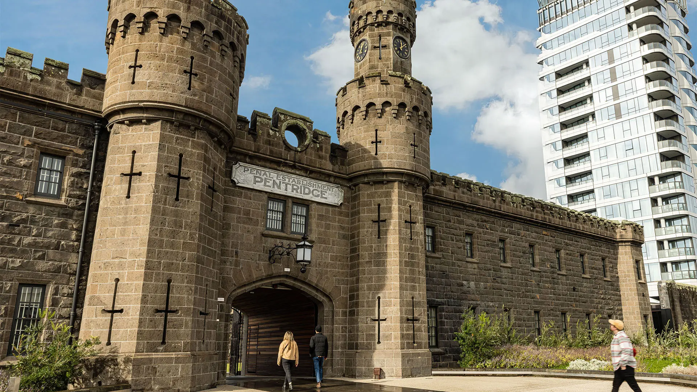
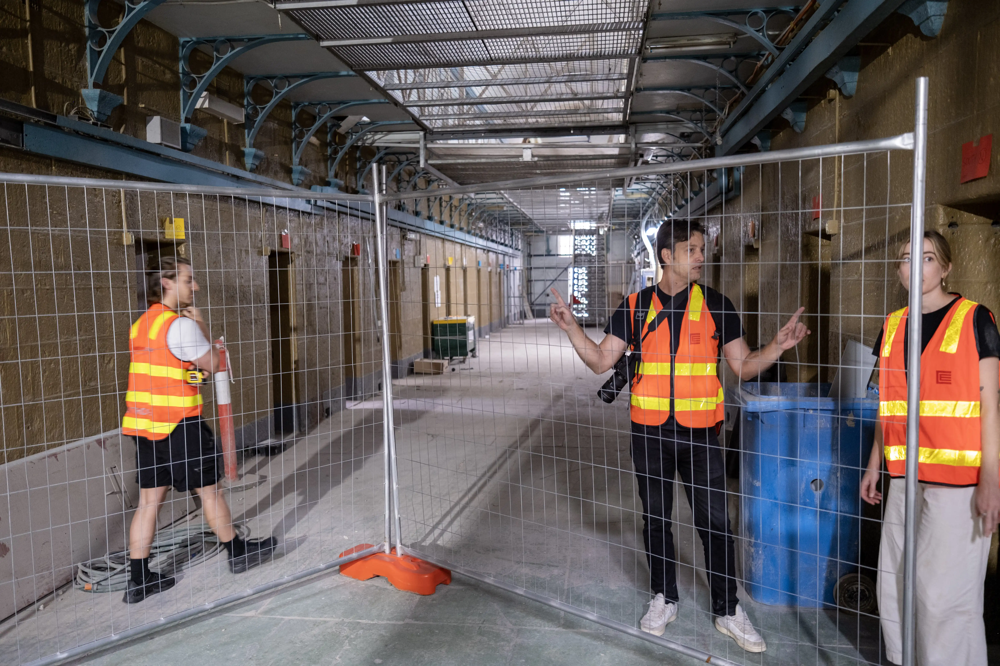
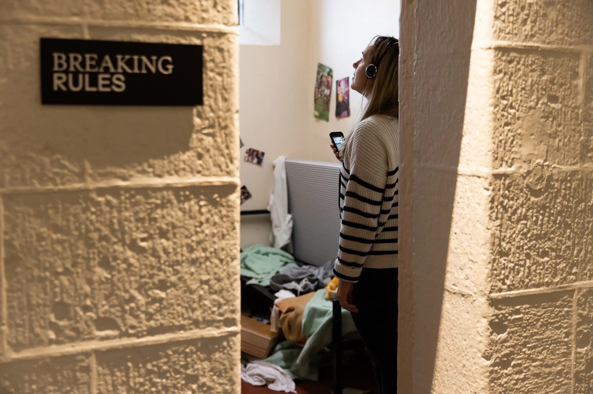
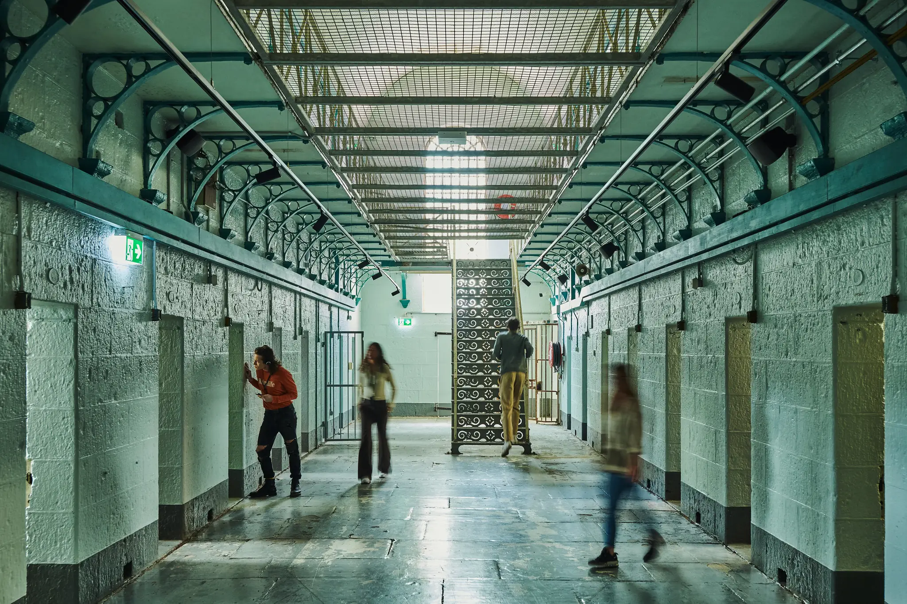
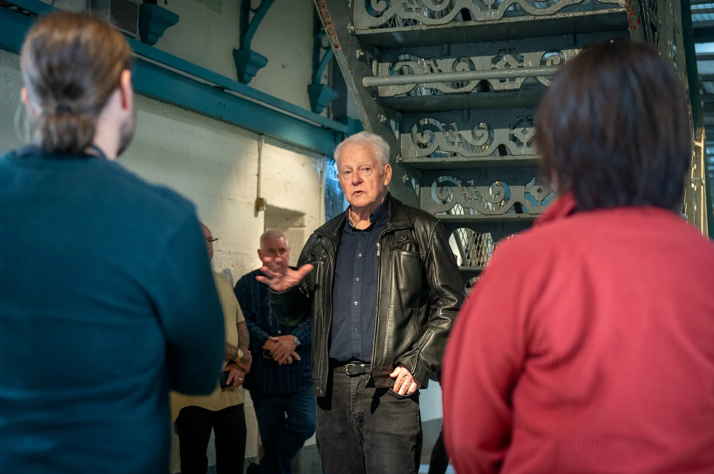

Pentridge Prison Tours
Melbourne, Australia
HM Prison Pentridge operated for nearly 150 years before closing in 1997. Today its bluestone walls sit within a major redevelopment. A former site of punishment now forms part of a new civic precinct.

Our task was to ensure that 150 years of incarceration were not quietly absorbed into redevelopment but preserved in all their complexity. We shaped the experience and interpretive framework for the tours in partnership with the National Trust of Australia. We focused on the divisions that still stand. B Division carries the arc from the 1850s to 1997. A and H Division hold the story of maximum security in the later twentieth century.

Mapping out the potential visitor journey with colleagues at Art Processors.
Themes were anchored in specific cells. Women inside. Execution. Warders. Resistance. Rule breaking. They emerged from interviews and research with former inmates, staff and others.

Visitors hear first-person testimony through a location-aware audio system that activates inside each cell. A live guide sets context at the beginning. The rest of the tour unfolds through 45 minutes of firsthand accounts embedded in the architecture itself.

We heard firsthand from people who spent time in Pentridge. Here we're on a guided tour with former H Division inmate John Killick.

The result is a portrait of Pentridge shaped by the people who knew it from the inside. The tours have since received major tourism awards and strong praise from former staff, inmates and others closely connected to the prison.